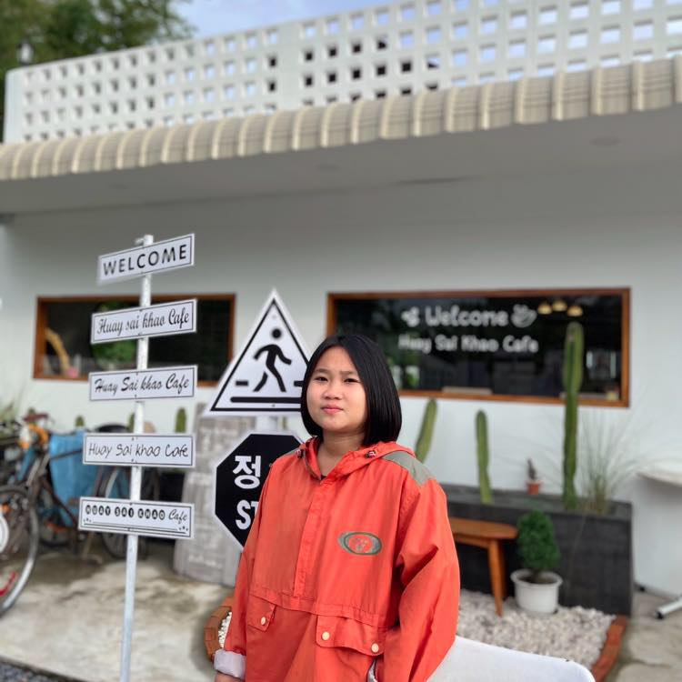
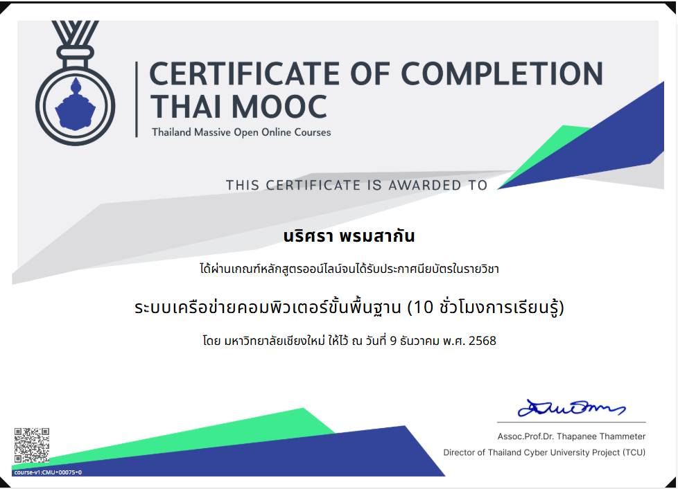
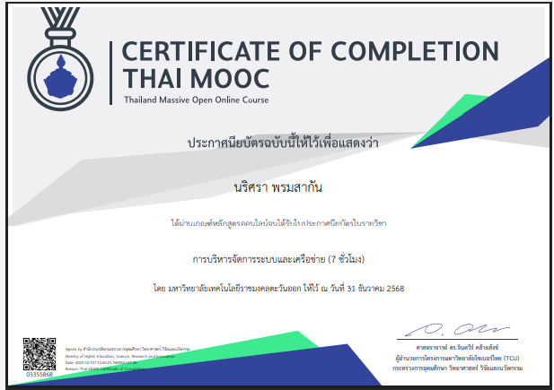
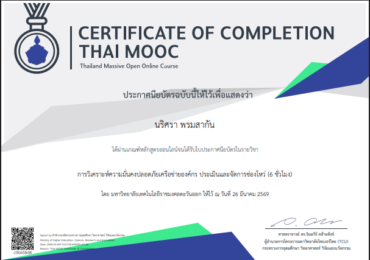
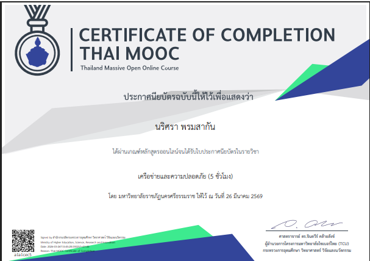

สวัสดีค่ะ ฉันนางสาว นริศรา พรมสากัน เกิดวันที่ 22 มกราคม พ.ศ.2547 กำลังศึกษาอยู่ที่มหาวิทยาลัยเทคโนโลยีราชมงคลล้านนา วิทยาเขตลำปาง
คณะวิทยาศาสตร์และเทคโนโลยีการเกษตร สาขาเทคโนโลยีสารสนเทศ
สนใจด้านการพัฒนา website ชอบเรียนรู้สิ่งใหม่ ๆ และพร้อมพัฒนาทักษะอย่างต่อเนื่อง




ทักษะที่ได้รับ: การวิเคราะห์ระบบ การทำงานเป็นทีม พื้นฐานของระบบฐานข้อมูล (MySQL, SQL Server) การเขียนโปรแกรมใน Java, C, PHP, HTML, Python, ความรู้ด้านเครือข่าย การตัดสินใจ และการเตรียมความพร้อมเพื่อเป็นมืออาชีพด้านไอทีที่เชี่ยวชาญ
เรียนรู้การพัฒนาเว็บแอปฯ ฐานข้อมูล และการเขียนโปรแกรมเชิงวัตถุ ควบคู่กับการตลาดดิจิทัลและซอฟต์แวร์ธุรกิจ พร้อมฝึกประสบการณ์วิชาชีพ